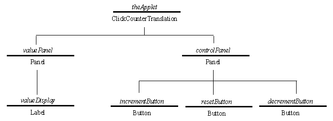

Click Counter Presentation
- Instance Hierarchy

The instance hierarchy shows the instance relationships between the AWT
components which will be assembled to construct the interface. The Panels
are needed to mount the other components upon in order to provide the
physical appearance required.
Labels are an area upon which a text message can be displayed upon,
more details later.
Buttons display a text label and know how to be clicked by the user, dispatching
an event as they are released.